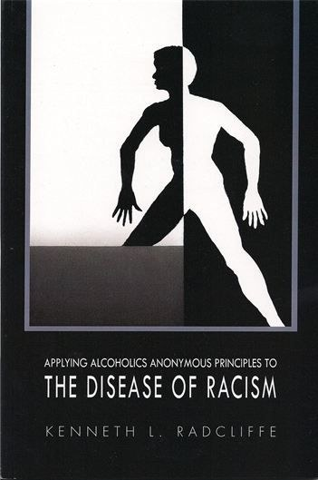

The book
Applying Alcoholics Anonymous Principles to the Disease of Racism
Racism is a disease, a mental illness, with symptoms much like alcoholism. It can’t be cured, but it can be treated. This short, direct book shows how.
What’s inside
A new way to understand racism
- Why racism behaves like a disease, and why it can be treated even though it cannot be cured
- How racism creates dysfunction in the lives of African Americans and other people of color
- How the principles of Alcoholics Anonymous apply to recovery from racism
- The role of the Black Church in resisting racism in America
Draft summary for Deacon Ken to review and rewrite in his own words.
What readers say
Praise for the book
“A Good Read.”
Timothy Michael Cardinal DolanArchbishop of New York
“Others have attempted to write about our nation’s addiction to racism, but this book sets the standard.”
Sandy Bernabei, LCSWLiberation Psychotherapist
“At a time when racism is a public health crisis, this book is a vital tool for healing.”
Barbara C. Wallace, PhDTeachers College, Columbia University
Questions
Before you buy
Do I need the book to join the Recovery Room?
Yes. Reading the book is required before joining the Recovery Room, so everyone in the group starts from the same foundation.
How do I get the e-book after I pay?
You’ll get a download link right away on screen and by email.
Can my church or program order copies?
Yes. Group orders of ten or more come with group pricing and a discussion guide. Ask about group orders.
Who is this book for?
Anyone whose life has been affected by racism, and the pastors, counselors, recovery coaches and social workers who walk with them.
Free guide
The 12 Steps of Racism Recovery
A two-page guide from Deacon Ken that walks through each Step as it applies to healing from racism. Free, sent straight to your inbox.